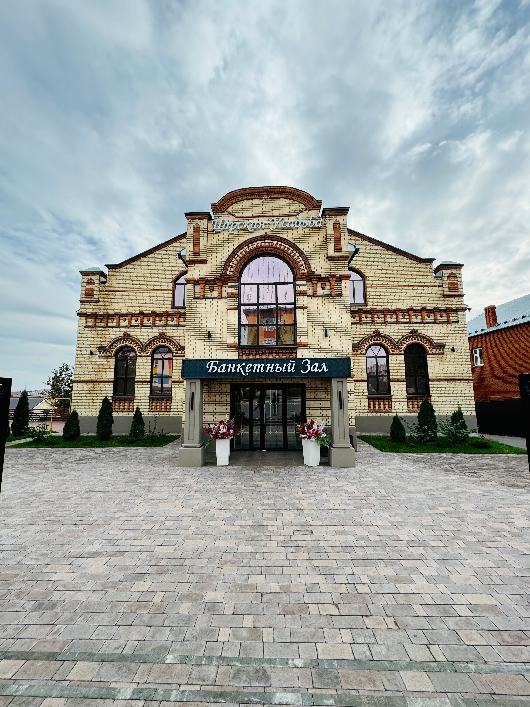

Приглашение на свадьбу
Азат + Залида
23 августа 2026
Дорогие гости
Мы женимся
В этот особенный день мы хотим быть рядом с самыми близкими людьми. Приглашаем вас разделить с нами радость, тепло и красоту нашего свадебного вечера.
23 августа 2026
Календарь
Август 2026
До свадьбы осталось
00дней
00часов
00минут
00секунд
Наша история
Тайминг
План вечера
Моменты


Место проведения
Царская усадьба
Элегантная площадка с торжественной атмосферой для нашего свадебного вечера.
ул. Галактионова, 15, Арск

Как добраться
Ждем вас здесь
ул. Галактионова, 15, Арск
Дресс-код
Нежная палитра вечера
Будем благодарны, если вы поддержите мягкую природную гамму: молочный, шампань, пыльная роза, шалфей и теплый беж.
Молочный
Шампань
Пыльная роза
Шалфей
Детали и пожелания
Подарки
Ваше присутствие для нас главное. Если захотите порадовать нас подарком, будем благодарны за вклад в семейную мечту.
Цветы
Просим не дарить цветы: вместо букетов можно выбрать бутылочку любимого вина или теплую открытку.
Детали
Пожалуйста, подтвердите присутствие заранее, чтобы мы могли подготовить для каждого гостя уютное место.
Счастливые кадры
Анкета гостя
Подтвердите присутствие
Еще немного нас
Чат гостей
Будем на связи
Мы создали Telegram-чат, где будем делиться важными деталями и отвечать на вопросы перед праздником.
Вступить в чат